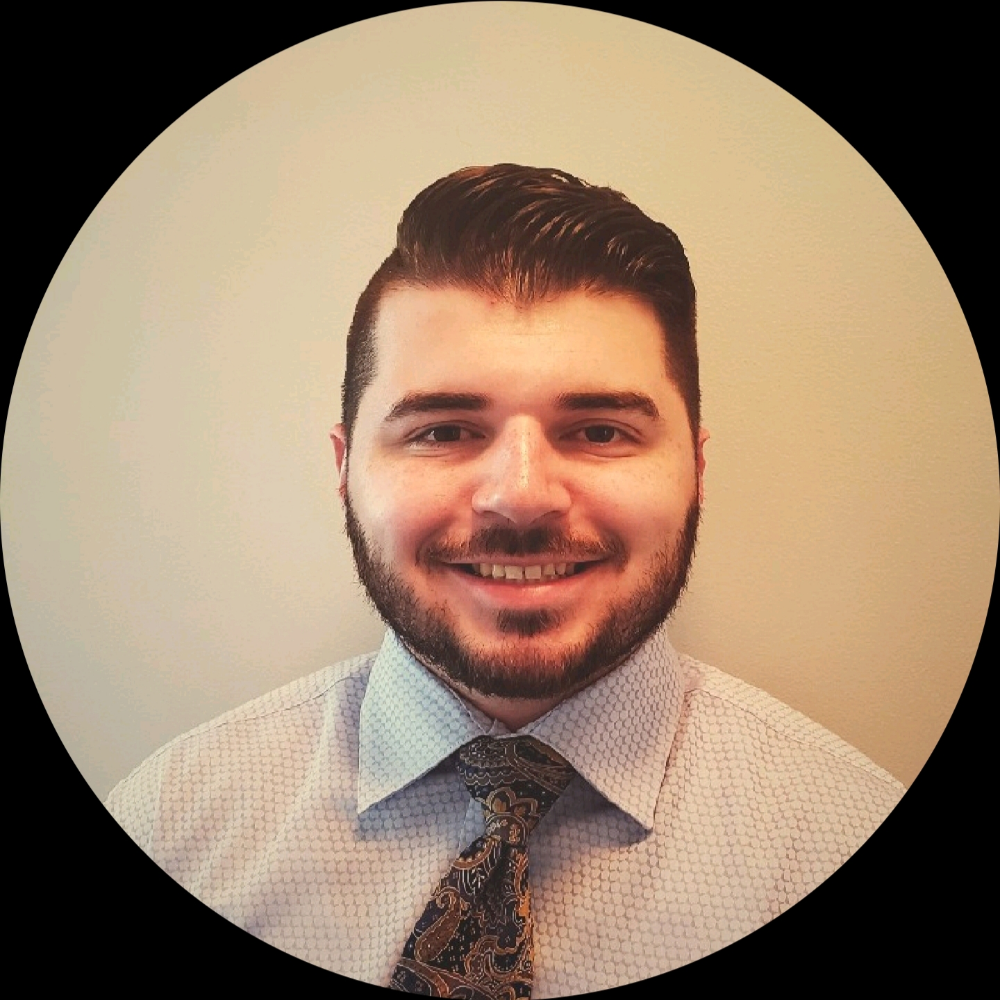

About Me
I was born in California, in the Bay area near San Francisco, also know as Silicon Valley. I have lived in North Carolina since I was five. I was raised like a west coast kid, so I am still faithful to the bay area like it's my home. I am a nerd in every since of the word. I love various forms of entertainment such as science fiction, animation, music, sports and various channels on Youtube. Music is my favorite hobbie as I play guitar whenever I can.
Currently, I live in Cary. I attended East Carolina Univeristy from 2014-2019 and graduated with a Bachelor of Science in Interpersonal/Organization Communications. As a pirate alumini, I am set to embark on journey into the world of programming, hoping it will take to me to grand places. With my creativity and love for collaberation, I am excited on proving my skills as a developer.
For more information, click the link to my resume!